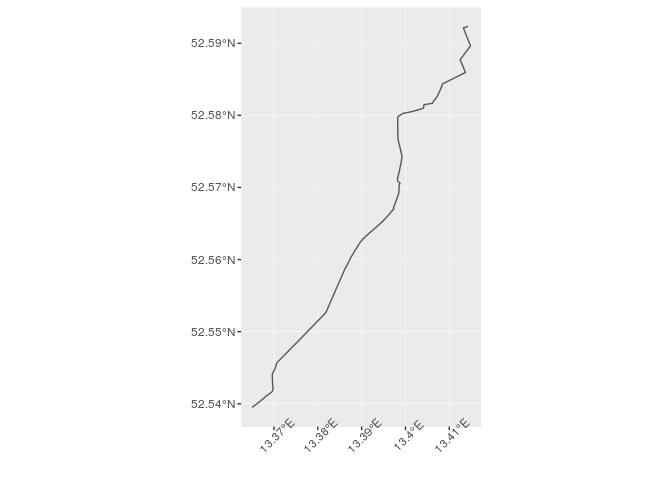
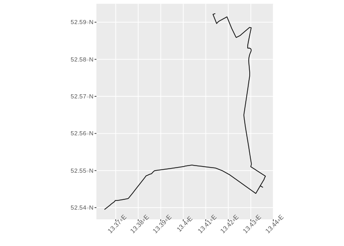
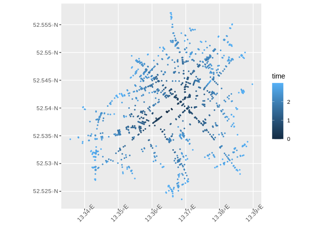
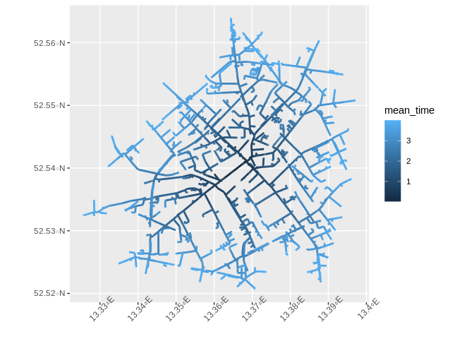

An R Interace to GraphHopper APIs
The purpose of {graphhopper} is to provide a quick and easy access to GraphHopper APIs. You can easily convert responses to simple feature (sf) objects.
Installation
Install the release version from CRAN with:
install.packages("graphhopper")Install the development version from GitHub with:
# install.packages("remotes")
remotes::install_github("crazycapivara/graphhopper-r")Get started
Run your own GraphHopper instance (with data of Berlin):
docker run --name gh --rm -p 8989:8989 -d graphhopper/graphhopper:2.0Setup
library(graphhopper)
API_URL <- "http://localhost:8989"
gh_set_api_url(API_URL)
info <- gh_get_info()
info$version
#> [1] "2.0"
info$data_date
#> [1] "2020-11-10T21:42:03Z"
gh_bbox(info)
#> [1] 13.06979 52.33306 13.76408 52.67962Route
Get a route in Berlin:
start_point <- c(52.592204, 13.414307)
end_point <- c(52.539614, 13.364868)
(route <- gh_get_route(list(start_point, end_point)) %>%
gh_as_sf())
#> Simple feature collection with 1 feature and 2 fields
#> geometry type: LINESTRING
#> dimension: XY
#> bbox: xmin: 13.36501 ymin: 52.53949 xmax: 13.41483 ymax: 52.59234
#> CRS: EPSG:4326
#> time distance geometry
#> 1 697411 7541.318 LINESTRING (13.41422 52.592...
ggplot(data = route) +
geom_sf() +
theme(axis.text.x = element_text(angle = 45))
route$time
#> [1] 697411
via_point <- c(52.545461, 13.435249)
route2 <- gh_get_route(list(start_point, via_point, end_point))
gh_time_distance(route2)
#> $time
#> [1] 1168950
#>
#> $distance
#> [1] 12843.67
ggplot(data = gh_as_sf(route2)) +
geom_sf() +
theme(axis.text.x = element_text(angle = 45))
gh_points(route2) %>%
head()
#> lon lat gh_id
#> 1 13.41422 52.59234 0
#> 2 13.41321 52.59212 1
#> 3 13.41483 52.58964 2
#> 4 13.41539 52.59004 3
#> 5 13.41599 52.59032 4
#> 6 13.41942 52.59145 5
gh_instructions(route2)[, c("lon", "lat", "gh_id", "gh_end_id", "text", "distance")] %>%
head()
#> lon lat gh_id gh_end_id text
#> 1 13.41422 52.59234 0 1 Continue onto Buchholzer Straße
#> 2 13.41321 52.59212 1 2 Turn left onto Buchholzer Straße
#> 3 13.41483 52.58964 2 5 Turn sharp left onto Buchholzer Straße
#> 4 13.41942 52.59145 5 8 Turn right onto Grumbkowstraße
#> 5 13.42352 52.58588 8 15 Turn left onto Blankenburger Straße
#> 6 13.43019 52.58851 15 18 Turn right onto Pasewalker Straße
#> distance
#> 1 72.248
#> 2 296.761
#> 3 373.025
#> 4 678.120
#> 5 556.120
#> 6 619.849Shortest path tree
start_point <- c(52.53961, 13.36487)
points_sf <- gh_get_spt(start_point, time_limit = 180) %>%
gh_as_sf() %>%
dplyr::mutate(time = (time / 1000 / 60))
ggplot() +
geom_sf(data = points_sf, aes(colour = time), size = 0.5) +
theme(axis.text.x = element_text(angle = 45))
Also query previous nodes to plot the network:
(columns <- gh_spt_columns(
prev_longitude = TRUE,
prev_latitude = TRUE,
prev_time = TRUE
))
#> [1] "longitude" "latitude" "time" "distance"
#> [5] "prev_longitude" "prev_latitude" "prev_time"
lines_sf <- gh_get_spt(end_point, time_limit = 240, columns = columns) %>%
dplyr::mutate(mean_time = ((time + prev_time) / 2) / 1000 / 60) %>%
gh_spt_as_linestrings_sf()
ggplot() +
geom_sf(data = lines_sf, aes(color = mean_time), size = 1) +
theme(axis.text.x = element_text(angle = 45))